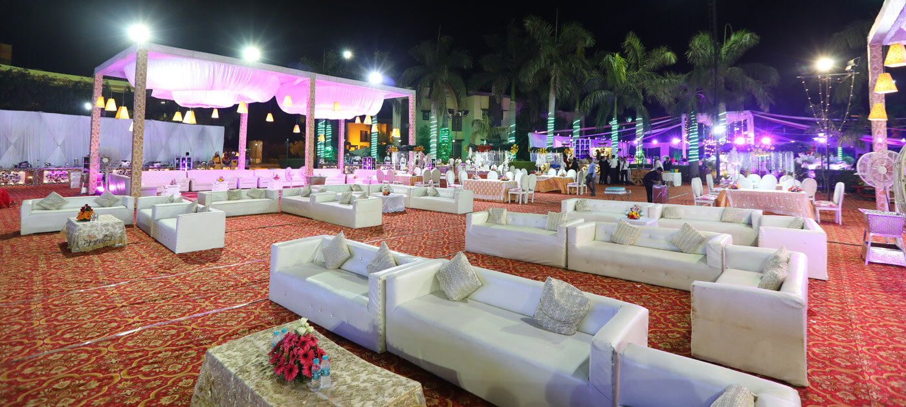
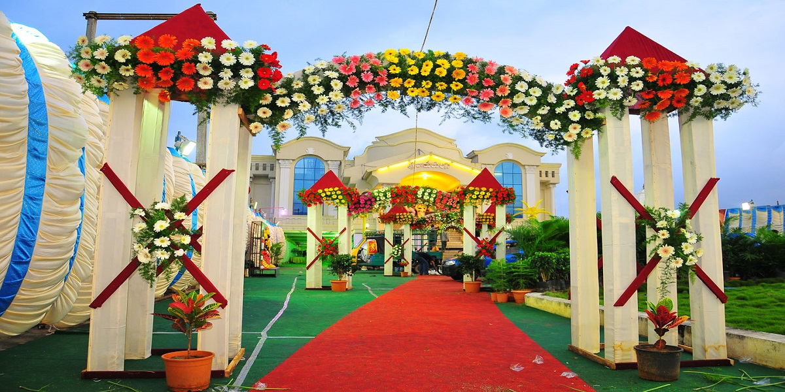

<section class="py-12 bg-white">
  <div class="max-w-7xl mx-auto px-6">
    <!-- Tabs -->
    <div class="flex justify-center gap-4 mb-8 flex-wrap">
      <button *ngFor="let tab of tabs" (click)="setActive(tab.id)"
        class="px-6 py-2 rounded-full font-semibold transition-all" [ngClass]="activeTab === tab.id 
          ? 'bg-green-800 text-white shadow-md' 
          : 'bg-green-500/90 text-white hover:bg-green-600'">
        {{ tab.label }}
      </button>
    </div>

    <!-- Tab Card -->
    <div class="bg-[#fdf5f1] p-8 rounded-2xl shadow-md grid md:grid-cols-2 gap-8 items-center">

      <!-- K–12 -->
      <ng-container *ngIf="activeTab === 'taber1'">
        <div>
          
        </div>
        <div>
          <h3 class="text-green-800 text-2xl font-bold mb-3">Decorative Sofa</h3>
          <!-- <h4 class="text-xl font-bold mb-4">Empower Student Success with Digital Portfolios</h4> -->
          <p class="mb-4 text-gray-700 leading-relaxed">
            Create a stylish and comfortable seating arrangement for your special events with our elegant decorative
            sofas. Perfect for weddings, receptions, parties, and formal gatherings, these sofas add a touch of luxury
            and charm to any setting.
          </p>
          <p class="mb-6 text-gray-700 leading-relaxed">
            Crafted for both beauty and comfort, our sofas provide the ideal spot for guests to relax, pose for photos,
            or enjoy the celebration. With designs ranging from classic to contemporary, you can choose pieces that
            perfectly complement your décor theme.
            <br><br>
            With Decorative Sofas, you’re not just offering seating—you’re elevating the atmosphere and creating
            memorable experiences.
          </p>
          <button class="px-5 py-2 rounded-full bg-green-600 hover:bg-green-700 text-white font-medium">
            Enquiry Now
          </button>
        </div>
      </ng-container>

      <!-- Colleges -->
      <ng-container *ngIf="activeTab === 'taber2'">
        <div>
          
        </div>
        <div>
          <h3 class="text-green-800 text-2xl font-bold mb-3">Top Ceiling</h3>
          <p class="mb-6 text-gray-700 leading-relaxed">Enhance your venue’s elegance with beautifully designed tent
            ceilings. From classic pipe ceilings to modern draped styles, our top ceilings add sophistication,
            structure, and charm to any wedding or event.
          </p>
          <p class="mb-6 text-gray-700 leading-relaxed">
          <p class="mb-6 text-gray-700 leading-relaxed">
            Enhance your venue’s elegance with beautifully designed tent ceilings. From classic pipe ceilings to modern
            draped styles, our top ceilings add sophistication, structure, and charm to any wedding or event.
          </p>
          <p class="mb-6 text-gray-700 leading-relaxed">
            With our Top Ceiling solutions, you’re not just covering a space—you’re creating a breathtaking atmosphere.
          </p>
          <button class="px-5 py-2 rounded-full bg-green-600 hover:bg-green-700 text-white font-medium">
            Enquiry Now
          </button>
        </div>
      </ng-container>

      <!-- Internships -->
      <ng-container *ngIf="activeTab === 'taber3'">
        <div>
          
        </div>
        <div>
          <h3 class="text-green-800 text-2xl font-bold mb-3">Flower Decoration</h3>
          <p class="mb-6 text-gray-700 leading-relaxed">
            Bring your celebration to life with stunning flower decorations that set the mood and elevate the ambiance.
            From elegant stage backdrops to vibrant table arrangements and entryway designs, our floral décor adds
            color, fragrance, and beauty to every corner of your event.
          </p>
          <p class="mb-6 text-gray-700 leading-relaxed">
            Whether you prefer classic roses, seasonal blooms, or trendy combinations, our expert arrangements are
            crafted to match your theme and style. Perfect for weddings, receptions, parties, and cultural
            gatherings—flower décor makes every moment picture-perfect.
          </p>
          <p class="mb-6 text-gray-700 leading-relaxed">
            With our Flower Decoration services, you’re not just decorating—you’re creating unforgettable memories
            filled with charm and elegance.
          </p>
          <button class="px-5 py-2 rounded-full bg-green-600 hover:bg-green-700 text-white font-medium">
            Enquiry Now
          </button>
        </div>
      </ng-container>

      <!-- Scholarships -->
      <ng-container *ngIf="activeTab === 'taber4'">
        <div>
          
        </div>
        <div>
          <h3 class="text-green-800 text-2xl font-bold mb-3">Wedding Decorations</h3>
          <p class="mb-6 text-gray-700 leading-relaxed">
            Explore a wide range of wedding decoration ideas that transform your venue into a breathtaking space. From
            elegant stage setups to vibrant floral arrangements, lighting, and themed décor, we help you create an
            atmosphere that reflects your style and story.
          </p>
          <p class="mb-6 text-gray-700 leading-relaxed">
            With our curated decoration options, you can match every detail to your vision—making your wedding day truly
            unforgettable.
          </p>

          <button class="px-5 py-2 rounded-full bg-green-600 hover:bg-green-700 text-white font-medium">
            Enquiry Now
          </button>
        </div>
      </ng-container>
    </div>
  </div>
</section>